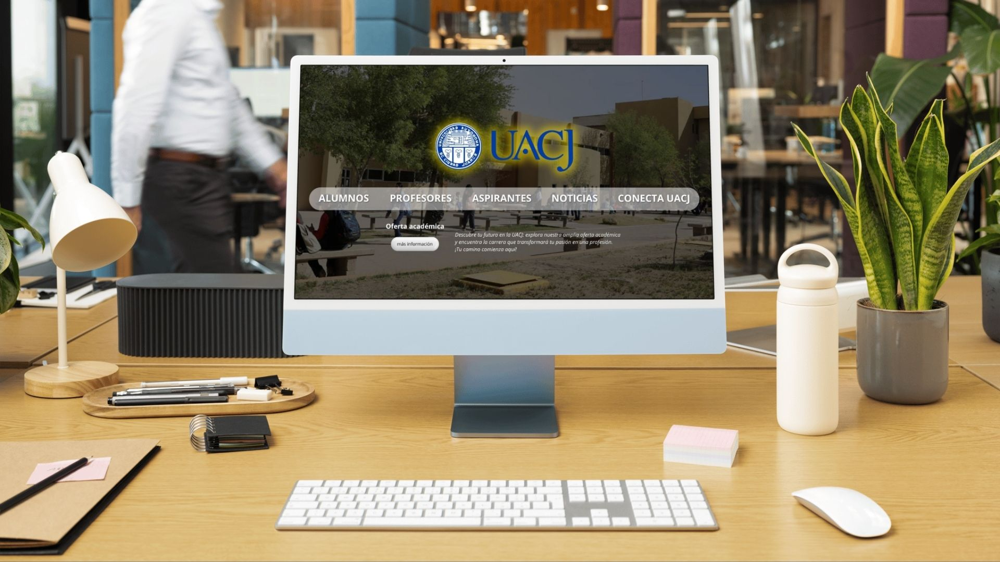
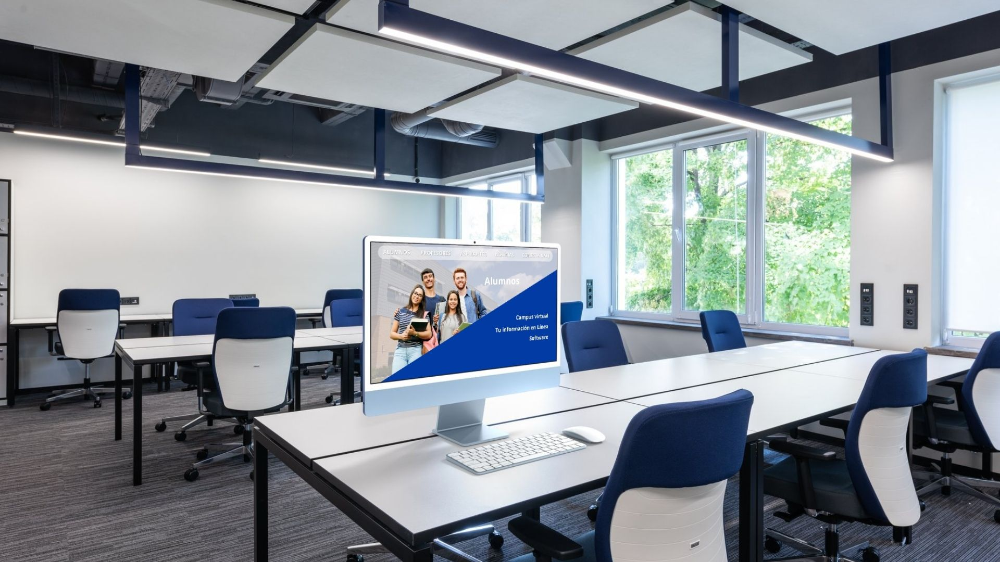
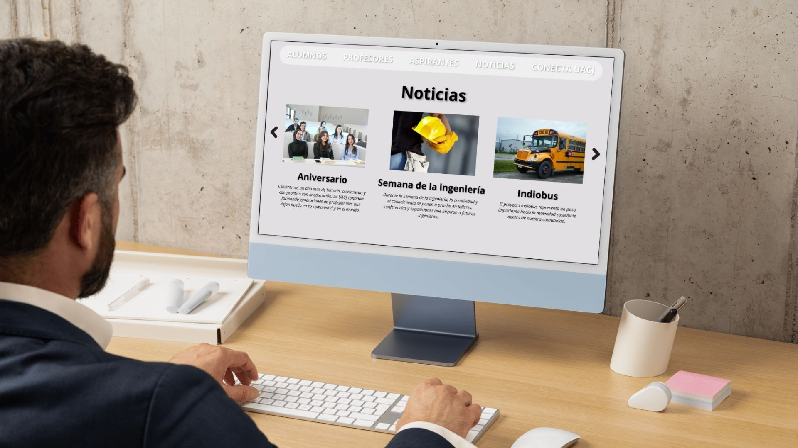
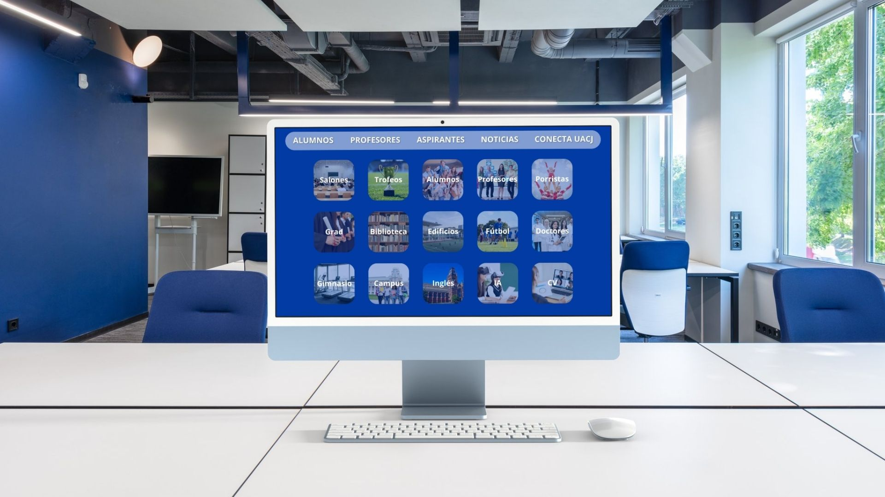
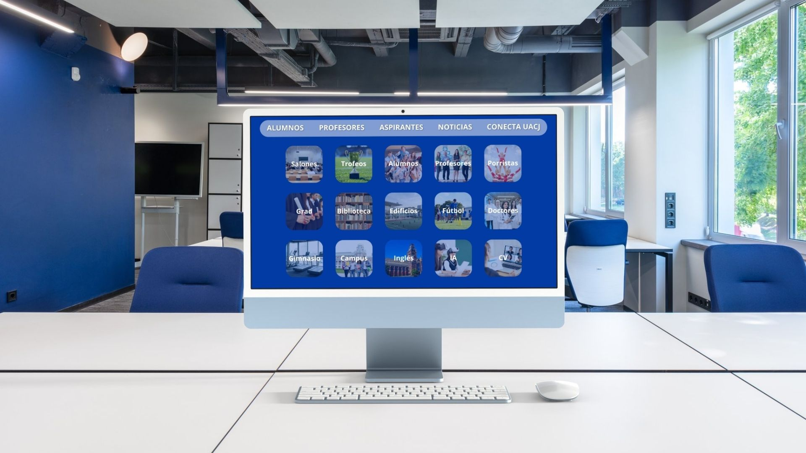
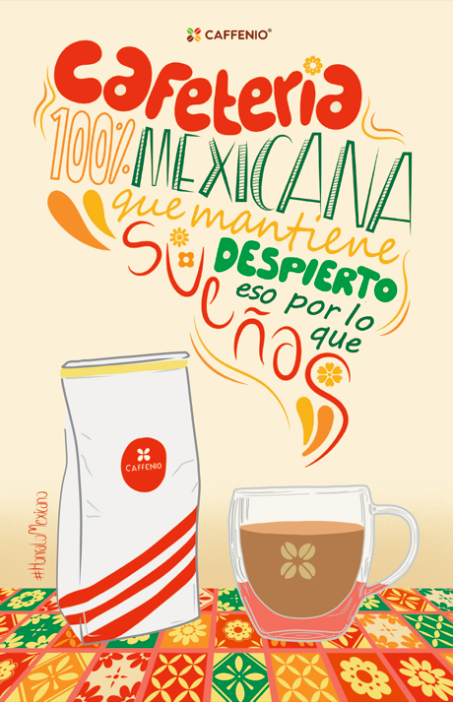

Unidad 1
Tema 1 – Conceptos básicos + Shortcuts Mac
En este tema se abordan los conceptos fundamentales del diseño web, tales como hipertexto, UX (Experiencia de Usuario) y prototipado. Para entenderlos mejor, podemos compararlos con el volleyball:
- Hipertexto: es como los pases entre jugadores; permite conectar diferentes partes del juego (o contenido web) de manera eficiente.
- UX (Experiencia de Usuario): es como la estrategia de juego; asegura que los movimientos del equipo sean claros, fáciles de seguir y agradables para los espectadores (usuarios).
- Prototipado: es como practicar jugadas antes del partido; permite experimentar con diferentes estrategias antes de implementarlas en la “partida real” (el sitio web).

Shortcuts en Mac
- Fn + Q: Abrir App Notes
- Cmd + Shift + 3: Captura de pantalla completa
- Cmd + Shift + 5: Panel de capturas general
- Cmd + Tab: Alternar ventanas
- Opción + Scroll: Retroceder o avanzar en el navegador
- Control + Cmd + N: Crear carpeta con elementos seleccionados
- Cmd + M: Minimizar ventana
- Cmd + H: Ocultar ventana actual
- Cmd + D: Duplicar los archivos seleccionados
- Cmd + E: Expulsar disco o volumen seleccionado
Código 1 – Index + Title + Head + Body + Párrafos + Títulos + Imágenes
En esta sección se explican las etiquetas principales del HTML que forman la estructura básica de una página web.
- <html>: Contenedor principal de toda la página web.
- <head>: Sección donde se colocan metadatos, título, enlaces a CSS o scripts; no se muestra directamente en la página.
- <title>: Define el título de la página, visible en la pestaña del navegador.
- <body>: Contiene todo el contenido visible de la página (texto, imágenes, listas, videos, etc.).
- <p>: Define un párrafo de texto.
- <h1> a <h6>: Representan los títulos y subtítulos, de mayor a menor jerarquía.
- <img>: Inserta imágenes en la página.

Tema 2 – Figma + Diagrama de flujo

Actividad para entender a primer concepto cómo funciona el código HTML.
Este tema introduce herramientas de diseño y planificación de páginas web:
- Figma: Herramienta de diseño colaborativo donde se pueden crear maquetas y prototipos de páginas web.
- Diagrama de flujo: Esquema visual que representa los pasos de un proceso o la interacción de los elementos en un sistema.

Código 2 – Color + Tamaño + Botón + Mapa + Video + Listas
En esta sección se describen etiquetas y elementos que permiten dar estilo y funcionalidad a una página web:
- Color: Se aplica mediante CSS para texto, fondo o bordes.
- Tamaño: Control del ancho, alto o fuente de elementos (en px).
- <button>: Crea un botón interactivo que puede ejecutar acciones.
- <iframe>: Permite incrustar contenido externo, como mapas o videos.
- <video>: Inserta un archivo de video reproducible en la página.
- <ul> y <ol>: Listas no ordenadas y ordenadas para organizar información.

Código 3 – Fondos + Article + Nav + Footer + Fuentes
Este código se centra en organizar la estructura y apariencia de la página, combinando diseño y semántica:
- Fondos: Se aplican con CSS para colorear o colocar imágenes de fondo.
- <article>: Define un contenido independiente que tiene sentido por sí mismo.
- <nav>: Contiene enlaces de navegación dentro de la página.
- <footer>: Pie de página que muestra información adicional o créditos.
- Fuentes: Se definen mediante CSS para cambiar la tipografía de textos y títulos.

También se trabajó en equipo la portada de una revista con respecto a las conferencias del FORO IA realizado en IADA.

Foro IA – IADA
En el reciente foro sobre Inteligencia Artificial impartido en el Instituto IADA, los ponentes compartieron su visión sobre cómo la IA puede convertirse en una herramienta valiosa tanto para estudiantes como para profesionales, así como la importancia de su uso ético y responsable. Durante la exposición, nos llamó la atención que, más allá de la tecnología, surgieron reflexiones sobre la necesidad de que las instituciones se mantengan actualizadas y fomenten espacios adecuados para el aprendizaje. Nuestra experiencia nos permitió identificar que, si bien es fundamental estar al día en innovación tecnológica, también es urgente atender áreas de oportunidad dentro del instituto, especialmente en infraestructura, equipamiento y recursos para los talleres, con el fin de mejorar la experiencia educativa y el desarrollo de habilidades prácticas de los estudiantes.
Ver presentación en CanvaUnidad 2
Uso del <div> y SEO
El elemento <div> sirve para organizar el contenido de una página agrupando elementos dentro de un contenedor. En esta unidad también vimos la importancia del SEO (Search Engine Optimization), que nos ayuda a aparecer al inicio de las búsquedas en Google mediante el uso correcto de etiquetas, títulos y metadatos.
Además, utilizamos padding para crear un margen interior entre el contenido y el borde del contenedor, lo cual mejora la legibilidad y el diseño visual.
Tema 3 – Prototipado
Existen diferentes tipos de prototipado en diseño web:
- Bocetos a mano: Primer acercamiento rápido y sencillo.
- Wireframes de baja fidelidad: Representación esquemática sin detalles visuales.
- Wireframes estáticos: Versiones más definidas pero sin interactividad.
- Mapa de sitio: Representación jerárquica de las páginas de un sitio web.
Uso de CSS Gradient y Border CSS Generator
Estas herramientas permiten generar fondos degradados y bordes personalizados de manera sencilla, facilitando la creación de diseños más atractivos en nuestras páginas web. Aquí utilizamos un ejemplo de gradient aplicado al bloque superior.
Actividades
Bocetos:

Wireframes estáticos:

Mapa de sitio:

Mockups
   

Lectura de esquemática – Joan Costa:
Costa plantea que el gráfico no solo informa, sino que también explica, persuade y facilita la comprensión mediante recursos visuales (formas, símbolos, jerarquías, diagramas).
Es decir, el gráfico es un instrumento didáctico dentro de la comunicación visual.
Este cartel publicitario de Caffenio es un ejemplo que informa que el café es 100% mexicano e invita al lector a degustar de su sabor, haciendo uso de la tipografía para transmitir la calidez de la bebida.
Tema 4 – Logo

|
|
||
|---|---|---|---|
|
El logo de Cromateca representa a un negocio dedicado a vender artículos para arte. Se utilizó una retícula como base para garantizar proporciones equilibradas y un diseño limpio. |
Este es un ejemplo de icono para app (iOS), diseñado para que sea identificable, simple y adaptado a diferentes tamaños de pantalla. |


Tema 5 – Static, Absolute, Fixed y Sticky
Estos son valores de la propiedad position en CSS que definen cómo se ubican los elementos en la página:
- Static: Posición por defecto, sigue el flujo normal del documento.
- Absolute: Se coloca en relación al contenedor padre con posición relativa.
- Fixed: Permanece fijo en la pantalla aunque se haga scroll.
- Sticky: Se comporta como relative pero al llegar a un punto definido se mantiene fijo.
Uso de las etiquetas <table>
La etiqueta <table> se utiliza en HTML para crear tablas que organizan información en filas y columnas.
Dentro de ella se usan otras etiquetas como <tr> (fila), <th> (encabezado de columna)
y <td> (celda de datos).
Por ejemplo:
<table>
<tr>
<th>Nombre</th>
<th>Edad</th>
</tr>
<tr>
<td>Eva</td>
<td>22</td>
</tr>
</table>
Este código crea una tabla con dos columnas: “Nombre” y “Edad”, y una fila de datos debajo. Las tablas permiten presentar información de forma clara, ordenada y visualmente estructurada.
Proyecto 2 – Página web en equipo
En esta sección se presenta el Proyecto 2 de la materia de Diseño Web, el cual consistió en la creación de una página web en equipo. Durante este proyecto aplicamos los conocimientos adquiridos a lo largo del curso, integrando estructura HTML, estilos CSS y elementos visuales que fortalecen la experiencia del usuario. El trabajo en equipo permitió definir una línea gráfica coherente, dividir las tareas de diseño y programación, y culminar con un resultado funcional y visualmente atractivo.
Ver en Canva: Proyecto 2 – Diseño Web
Unidad 3
Competencia, Diferenciador, Colores y Tipografía
En esta parte del proyecto en equipo correspondiente a la Unidad 2, analizamos los elementos que conforman la identidad visual de nuestra página web. Primero, se identificó a la competencia directa e indirecta para reconocer sus fortalezas y debilidades, lo que nos permitió definir un diferenciador claro que destacara nuestro sitio frente a otros similares. Posteriormente, seleccionamos una paleta de colores coherente con la temática y la personalidad de nuestro proyecto, cuidando que transmitiera armonía y accesibilidad visual. Finalmente, trabajamos en la tipografía, eligiendo fuentes legibles, modernas y adecuadas al estilo del sitio web, reforzando la identidad visual y la experiencia del usuario.
Ver presentación de tipografía – Ximena MarchandUso del <div> y SEO
En diseño web, existen diferentes formas de representar los colores.
El formato Hexadecimal (por ejemplo, #FF0000) utiliza combinaciones de números y letras para definir los valores de rojo, verde y azul.
El RGB (rgb(255, 0, 0)) también se basa en estos tres colores primarios,
mientras que RGBA (rgba(255, 0, 0, 1)) hace uso de un cuarto valor que representa
el nivel de transparencia conocido como canal alfa.
Por otro lado, el formato HSL (hsl(0, 100%, 50%)) define los colores mediante tres propiedades:
tono, saturación y luminosidad, y su variante HSLA (hsla(0, 100%, 50%, 1)) añade también el canal alfa.
Por último, se pueden emplear keywords o nombres de color en inglés
(como red o blue), los cuales representan tonalidades predefinidas en los navegadores.
Actividad con ChatGPT
En esta actividad se realizó una página web con ayuda de la inteligencia artificial ChatGPT. Para ello, se utilizó la siguiente instrucción inicial: "Hola chat, hazme un código en HTML para una página web que no sea responsiva, tú elige el resto." A partir de esta indicación, se generó una estructura básica de sitio web que sirvió como punto de partida para el ejercicio.
A continuación, se muestra el resultado inicial obtenido con ChatGPT:

Posteriormente, con los conocimientos adquiridos en clase, se trabajó sobre esta “plantilla” inicial para mejorar su estructura, diseño y organización.
A continuación, se presentan las mejoras realizadas en el resultado final:


|
Este código es útil para obtener información del usuario a través de un formulario y posteriormente guardarla en una base de datos (aunque en esta ocasión no está disponible la funcionalidad de almacenamiento). |
Actualización de la bitácora 1
Esta bitácora cuenta con una actualización de información en la que se añadieron los mockups con los wireframes finos del diseño de la página web de la universidad, mostrando con mayor detalle la estructura visual y la distribución de los elementos dentro del sitio. Además, se realizó una mejora en la navegación al implementar un menú sticky, el cual permanece visible en todo momento al desplazarse por la página, facilitando el acceso rápido a los diferentes temas y códigos sin necesidad de regresar al inicio.
Actualización de la bitácora 2
En esta actualización añadimos la sección de Proyecto 2, donde se presenta directamente una presentación de Canva sin la necesidad de salir de nuestra página web, mostrando el proceso de desarrollo de la página web que realizamos en equipo. Además, en la sección del Tema 4 – Logo, se hizo uso de las tablas para lograr una mejor visualización de la información. En relación con este tema, también se añadió una breve explicación sobre su uso dentro del Tema 5.
Actualización de la bitácora 3
En esta actualización se añadió una nueva sección correspondiente a la Unidad 2, donde se presenta una introducción al proyecto en equipo junto con una presentación de Canva integrada directamente en la página, permitiendo visualizar el desarrollo y los avances del diseño web sin salir del sitio. Además, se incorporó un apartado sobre los tipos de color empleados en el desarrollo web, explicando los formatos Hexadecimal, RGB, HSL y keywords. Cada tipo de color se muestra dentro de un <div> con estilos personalizados en la hoja de CSS. Por último se colocó la actividad correspondiente a crear una página web con ayuda de Chat GPT.